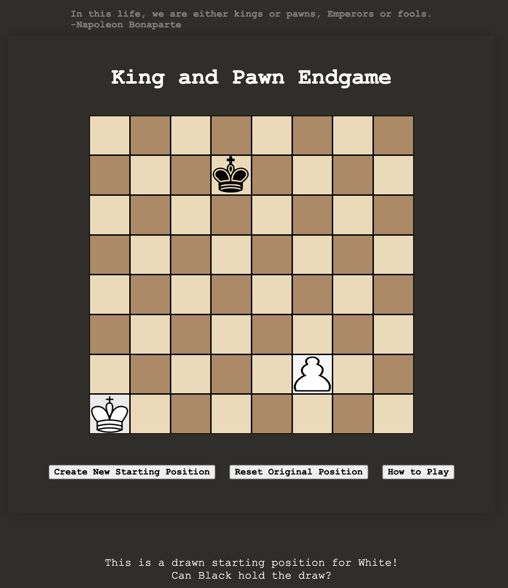

Projects
Podcast App

Podcast App
Podcast App is a project consisted of building a custom backend API and frontend website/app using React. This was my first project using MERN (MongoDB, Express, React, Node). Our team of three had 9 days to build this app.
Coctailz

Coctailz
Coctailz is an app which showcases a wide list of cocktail recipes using a public api. This project was built in 6 days alongside my partner. It was a pair coding hackathon where every day consisted of chatting through zoom from 9am - 5pm and coding using VS Code live share. The front-end was built using React JS. This was my first project ever using React and an API.
King and Pawn Endgame
King and Pawn Endgame
King and pawn endgames are notoriously tricky, even Grandmasters struggle to convert winning positions. With the help of chess engines, we are now able to solve chess (find the perfect moves) as long as there are 7 or fewer pieces on the board.
This was my first project from General Assembly's Software Engineering Immersive course. It was an individual project built in 9 days. Not 3 weeks before I had not even seen a Javascript file.
Socials